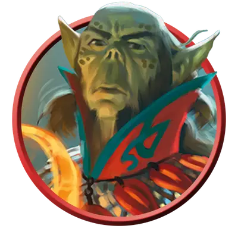

Гитьянки-дракономант
Githyanki Dracomancer
Средняя Аберрация (Гит), Принципиальная Злая

Класс Защиты 18 Инициатива +8 (18)
Хиты 255 (30к8 + 120)
Скорость 30 футов, Полёта 30 футов (парит)
| мод | спас | ||
|---|---|---|---|
| СИЛ | 10 | +0 | +0 |
| ЛОВ | 16 | +3 | +8 |
| ТЕЛ | 18 | +4 | +9 |
| мод | спас | ||
|---|---|---|---|
| ИНТ | 20 | +5 | +10 |
| МДР | 16 | +3 | +8 |
| ХАР | 18 | +4 | +4 |
Чувства пассивное Восприятие 18, Слепое зрение 30 футов
Языки Общий, Гитский, Драконий
Опасность 16 (15 000 опыта; БВ +5)
Действия
Мультиатака. Гитьянки совершает три атаки Драконьим ударом.
Драконий удар. Бросок рукопашной или дальнобойной атаки: +10, досягаемость 10 фт. или дистанция 120 фт. Попадание: 12 (2к6 + 5) Рубящего урона плюс 17 (5к6) урона Огнём, и цель Испугана до начала следующего хода гитьянки.
Призыв дыхания дракона (Перезарядка 5–6). Спасбросок Ловкости: Сл 18, каждое существо в 90-футовом Конусе. Провал: 27 (6к8) урона Огнём плюс 27 (6к8) урона Силой. Успех: Только половина урона.
Сотворение заклинаний. Гитьянки сотворяет одно из следующих заклинаний (заклинательная характеристика — Харизма, Сл спасброска заклинаний 18, +10 к попаданию атак заклинаний):
Неограниченно: Волшебная рука, Невидима
2/день каждое: Необнаружимость, Планарный переход, Языки
Бонусные действия
Туманный шаг (3/день). Гитьянки сотворяет Туманный шаг, не нуждаясь в компонентах (заклинательная характеристика — та же, что для Сотворения заклинаний).
Бонус мастерства +5
Среда обитания Астральный план
Сокровища Оружейные
Гитьянки
Пришельцы из Астрального плана
Когда-то давно гитьянки были обычным народом, но империя злобных свежевателей разума заставила их погрузиться в пучину конфликтов. Гитьянки — худощавые человекоподобные существа с зазубренными ушами и пятнистой кожей различных оттенков жёлтого, зелёного и коричневого. Хотя некоторые из них выбирают собственный путь, большинство находится под влиянием прошлого, навсегда изменившего их судьбу.
Одним из последних деяний Гит стало заключение альянса между гитьянки и богиней драконов Тиамат. С тех пор консорт Королевы драконов — красный дракон Эфеломон — и его род стали их союзниками. Гитьянки-дракономанты соблюдают этот договор и совершенствуют свои магические таланты, которые дополняют мощь красных драконов.
История Гит
Много веков назад похожий на людей народ был завоёван империей свежевателей разума. Иллитиды удерживали над ними власть с помощью немыслимых ужасов, принудительной эволюции и перепрограммирования психики. В конце концов Гит — одна из пленниц — восстала и повела свой народ против угнетателей. Её последователи, которые стали называть себя гитами, победили свежевателей разума и уничтожили их бескрайнюю империю.
К сожалению, их триумф оказался кратковременным. В то время, как Гит занималась строительством своей обширной империи, один из лидеров по имени Зертимон бросил ей вызов. Он утверждал, что стремление Гит к возмездию и новым завоеваниям служит доказательством масштабного ментального программирования свежевателей разума, и система биологического контроля, которая обречёт их народ на вечное рабство. Эти слова раскололи гит на две фракции: гитьянки («последователи Гит») — сторонников самой Гит, и гитцераи («отвергнувшие Гит») — последователей Зертимона, — и положили начало затяжному конфликту.
После исчезновения Гит её советница Влаакит стала править гитьянки. Её потомок, Королева-лич Влаакит, до сих пор стоит во главе своего народа. Эта бессмертная тиранша заставляет гитьянки вести бесконечные войны против свежевателей разума, гитцераи и всех тех, кто смеет бросить вызов её могуществу.
Приключения с гитами
Персонажи могут быть втянуты в противостояние гитьянки или гитцераи множеством различных способов. Совершите бросок по таблице «Противостояние гитов» для вдохновения или выберите сами завязку приключения с участием этих давно соперничающих народов.
Противостояние гитов
| 1к8 | Персонажи должны… |
| 1 | Доставить сообщение или таинственную посылку Королеве-личу Влаакит или от неё. |
| 2 | Найти неуловимого лидера гитов для замаскированного пожирателя интеллекта. |
| 3 | Помочь гитцераи, которые бегут от разрушивших их убежище гитьянки. |
| 4 | Возобновить или разорвать союз гитьянки с красными драконами. |
| 5 | Участвовать в охоте на иллитидов вместе с гитьянки. |
| 6 | Раскрыть гита-шпиона в планарном поселении или на магическом корабле. |
| 7 | Отправиться на поиски последнего известного местонахождения легендарных Гит или Зертимона. |
| 8 | Вернуть клинок павшего гитьянки-рыцаря его народу. |